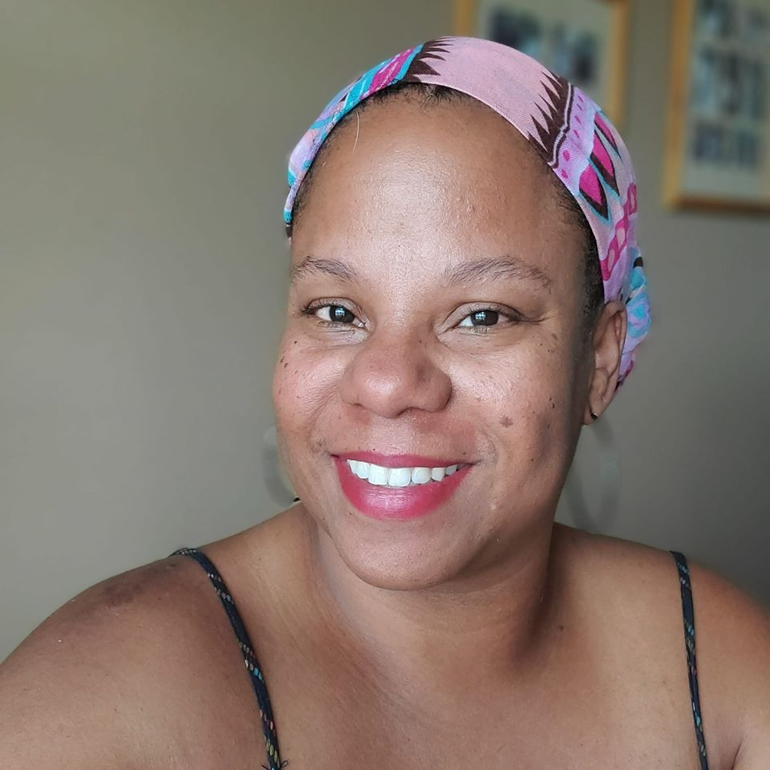

<!DOCTYPE html>
  <html lang="en"></html>
  <head>
    <meta charset="utf-8" />
    <meta http-equiv="X-UA-Compatible" content="IE=edge" />
    <title>Kisha Hymes ... a road to development</title>
    <meta name="description" content="" />
    <meta name="viewport" content="width=device-width, initial-scale=1" />
    <link rel="stylesheet" href="style.css" type="text/css" />
    <title>Kisha Hymes, my road to development</title>
  </head>
<style>
  body {
    background-image: url(img/myprofile.jpg);
  }
</style>
    <body>
    <header>
      <div>
      <h1>Kisha Hymes</h1>
      <div id="thin_line">
        <h5>
        kishacodes@gmail.com | @kishacodes | www.github.com/kishacodes
        </h5>

      </div>
    </div>
    </header>
    <article>

    </article>

      <!--  -->

      <main>
        <div>
          <h2>Language proficiencies</h2>
          <li>English, Sign Language, JavaScript, Java, Python</li>
          <br />

        <h2>Computer science background</h2>
        <!-- <ul></ul> -->
        <em> 2020 - currently</em><br />
        <li><b>LaunchCode web development bootcamp</b> <br />Learned JavaScript and
        Java programming languages in order to create projects using HTML, CSS,
        Node JS to produce fullstack web applications. Upon completion of the
        bootcamp, I will be looking for fulltime employment as a junior web
        developer. <button type="button">My Portfolio!</button><br /></li>
        <br />
        <em>2019 - currently</em><br />
        <li><b>Hillsborough County School District </b> <br>High school teacher in
        the Business/Career Technology Education department. Taught Advanced
        Placement Computer Science and Game Development courses to students in
        grades 9-12.<br /></li>
        <br />
        <em>1997 - 2003</em><br />
        <li><b>Various newspapers</b> <br />Worked as a copy editor/page designer at
        Syracuse Newspapers, Detroit Free Press, and the Tampa Tribune to edit
        copy and design sections of the daily newspaper and online website.<br />
        <br /></li>
<!-- </ul> -->

      </div>

      <div id="secondary_div">

      <h2>Personal life</h2>
      <p>Community service and self-development has been an ongoing trend throughout my life. I have always taken on new skills and learned new things due to my constant internal desire to fill my life with challenging problems to solve. </p>
      <ul>
        <b>Current volunteer work:</b>  Girls Who Code club sponsor, Crossing Church Deaf Ministry, Valrico Rams Pop Warner Board of Directors
        <b>Previous volunteer work: </b> Guardian ad Litem program, Boyette Springs Elementary PTA, National Association of Black Journalists, Media General Diversity trainer
      </ul>
      </div>

    </main>
    </body>
    <footer>
      <div id="thin_line">
     <h5>&copy; 2020 Kisha Hymes</h5>
      </div>
    </footer>
  </html>
</html>
